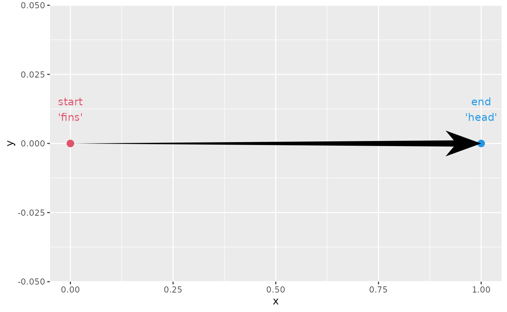
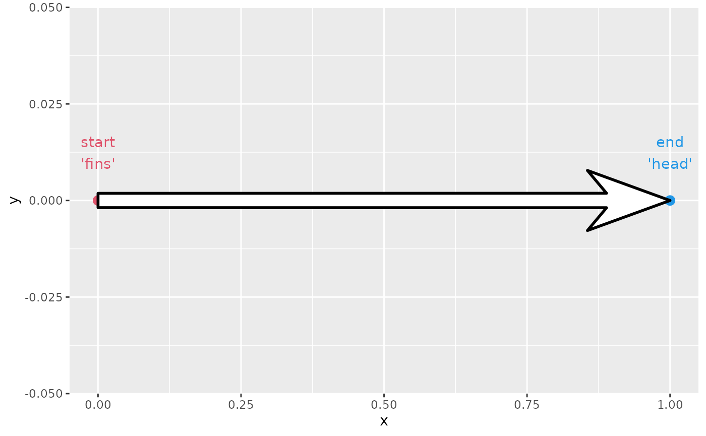
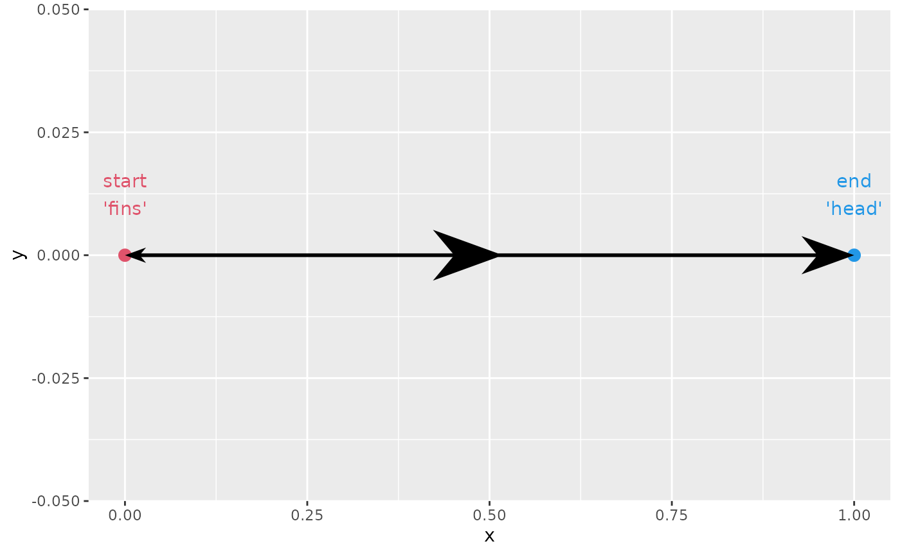
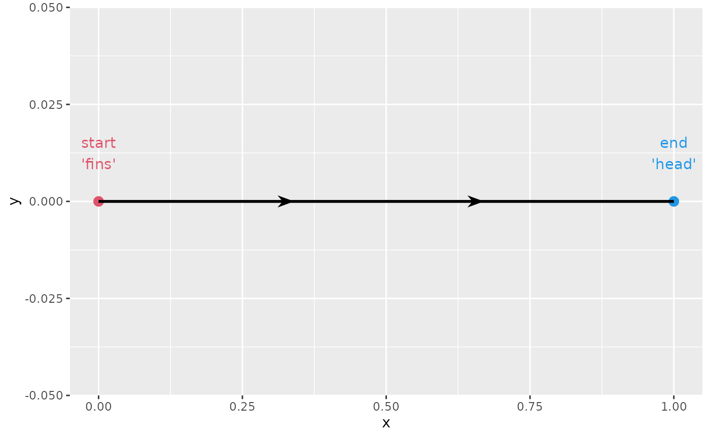
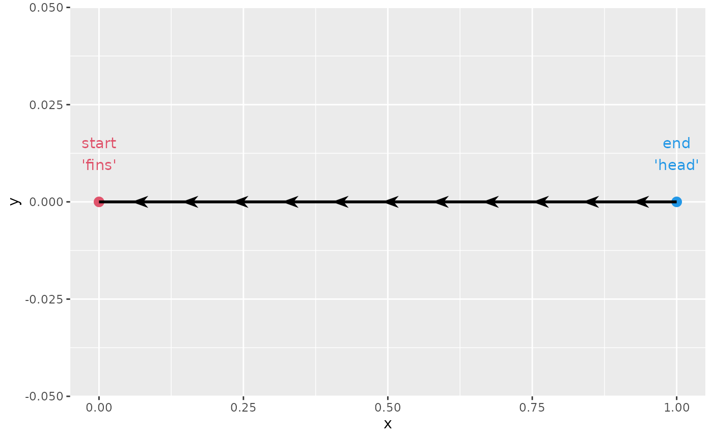
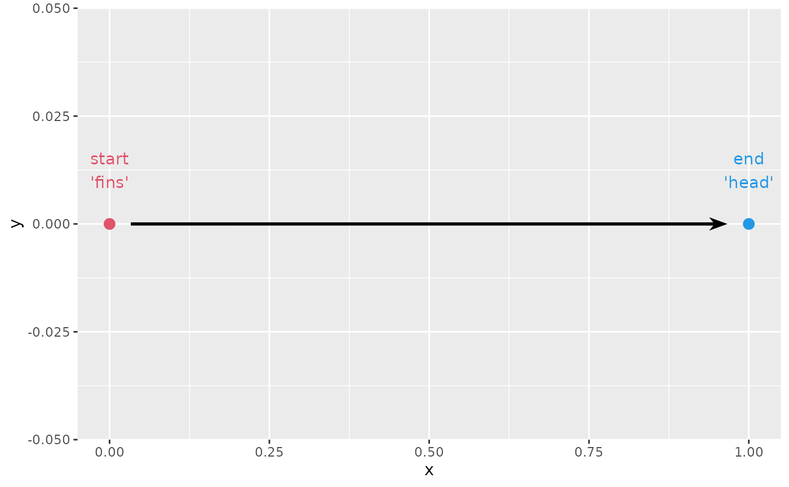
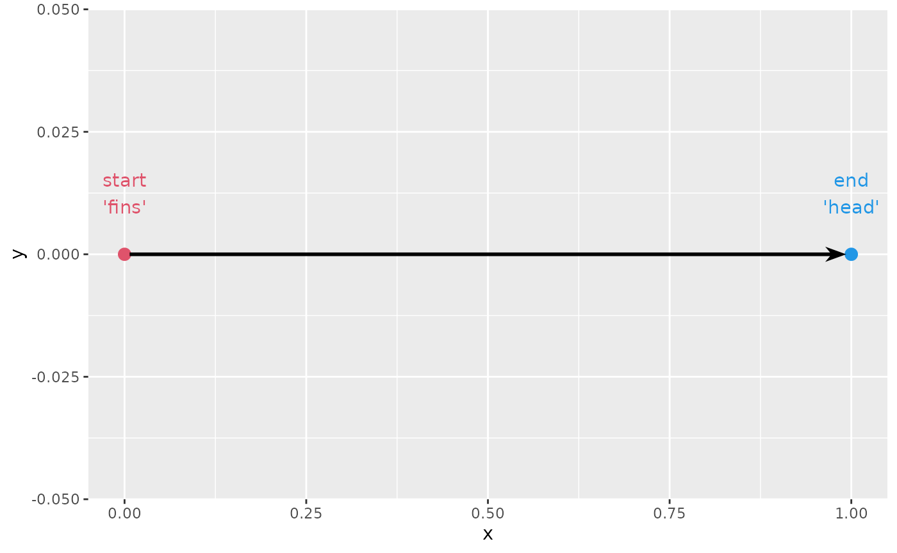
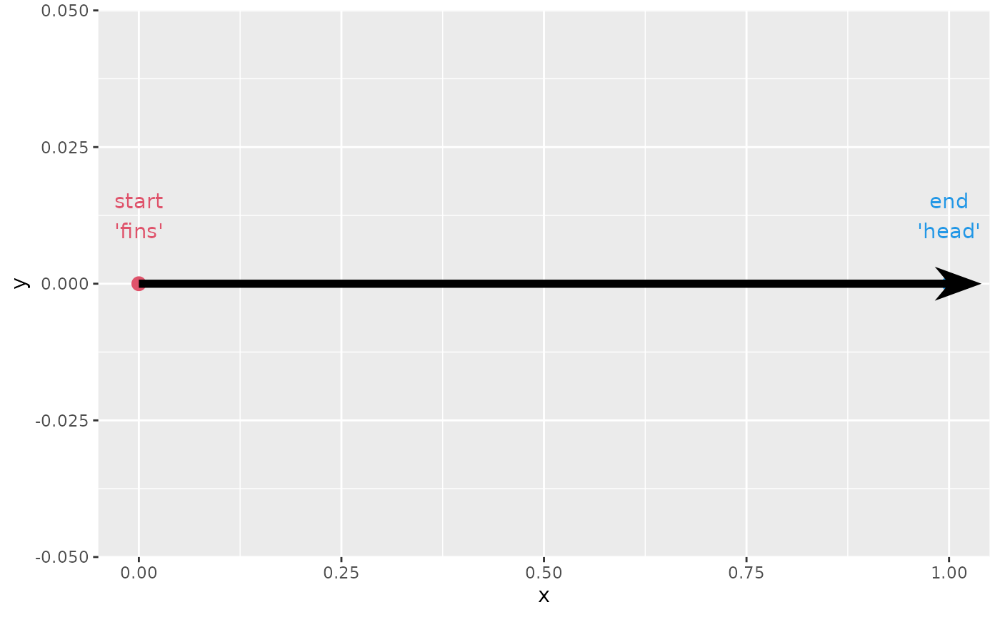
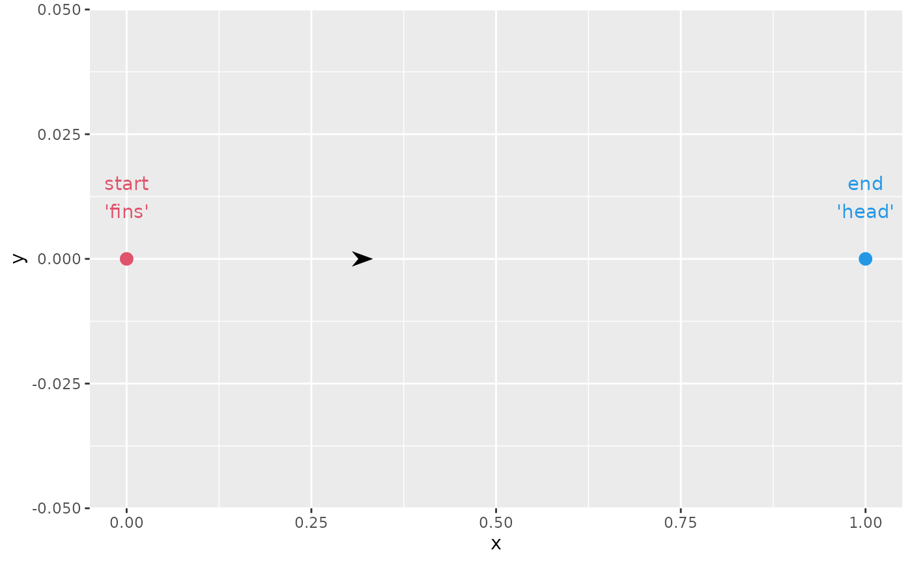

This vignette walks through the various options present in
geom_arrow() and friends. First, let’s setup a very basic
plot in which we can show what the parameters are doing.
p <- ggplot(data.frame(x = c(0, 1), y = 0), aes(x, y)) +
geom_point(colour = c(2, 4), size = 3) +
geom_text(
aes(label = c("start\n'fins'", "end\n'head'")),
colour = c(2, 4), vjust = -1
)Aesthetics
There are 3 aesthetics that depart from the typical
geom_path() behaviour. The first one is the
linewidth aesthetic, in that it can vary within a path.
p + geom_arrow(linewidth = c(0, 3))
This all means that you could in theory display a kernel density estimate using an arrow, by remapping a computed density aesthetic to the linewidth.
ggplot(faithful, aes(waiting)) +
geom_arrow(
stat = "density",
aes(y = after_stat(0),
linewidth = after_scale(ndensity * 20))
)
The other two are the stroke_colour and
stroke_width aesthetics. These can be used to outline the
arrow.
p + geom_arrow(stroke_colour = "black", stroke_width = 1,
colour = "white", linewidth = 5)
Heads, fins and middle arrows
This dealt with more thoroughly in another vignette. To briefly recap, an arrow comes in three parts: a head, a shaft and fins. All these parts are valid places to place ornaments.
Using arrow parts
The three different parts of an arrow can be populated with the
arrow_head, arrow_fins and
arrow_mid arguments. Whereas arrow_head and
arrow_fins are pointed towards their respective path ends,
the arrow_mid follows the forward orientation.
p + geom_arrow(
arrow_head = arrow_head_wings(),
arrow_mid = arrow_head_wings(),
arrow_fins = arrow_head_wings()
)Setting sizes
The arrow sizes can be controlled by the length_head,
length_fins and length_mid arguments. You can
use a plain <numeric> to have the arrow size be
relative to the linewidth aesthetic. Alternatively, you set
the length in an absolute manner by providing a
<grid::unit> object.
p + geom_arrow(
arrow_head = arrow_head_wings(),
arrow_mid = arrow_head_wings(),
arrow_fins = arrow_head_wings(),
length_head = 10,
length_fins = 4,
length_mid = unit(10, "mm")
)
Middle arrows
Middle arrows needn’t be on the middle. You can control where they
are placed using the mid_place argument. It accepts input
between [0-1], and represents the distance along the path where the
arrows are drawn.
p + geom_arrow(
arrow_head = NULL,
arrow_mid = arrow_head_wings(),
mid_place = c(0.33, 0.66)
)
You can swap the direction of middle arrows by providing negative
numbers to the mid_place argument.
p + geom_arrow(
arrow_head = NULL,
arrow_mid = arrow_head_wings(),
mid_place = c(0.16, -0.33, 0.66, -0.82)
)One alternative to manually specifying positions, is to provide a
distance between subsequent arrows. You can do this by giving a
<grid::unit> instead of a
<numeric>. Again, to change the direction of the
middle arrows, you can set this to a negative unit.
p + geom_arrow(
arrow_head = NULL,
arrow_mid = arrow_head_wings(),
mid_place = unit(-1, "cm")
)
Resection
Sometimes, you wouldn’t want your arrows to exactly touch the object
that they’re pointing to. To prevent this, you can ‘resect’ the arrow to
make it a bit shorter near the ends. You can provide the
resect argument in millimetres to cut the path at both the
heads and the fins of the arrow.
p + geom_arrow(resect = 5)
You can also control independently for the head and fins of the arrow
how much resection is to be done with the resect_head and
resect_fins arguments.
p + geom_arrow(resect_head = 10, resect_fins = 3)A geom that does this automatically is
geom_arrow_chain(). Normally, it has a default
resect value of 1 millimeter, but if you turn this off and
set the size appropriate for the start and end points we’ve
drawn, you can see that it doesn’t overlap the points, but barely
touches them.
p + geom_arrow_chain(size = 3, resect = 0)
Other parameters
Sometimes, you’ve already dodged the object to be pointed at a bit.
Now you may find yourself with an arrow that is too short. You can then
use justify = 1 to have the arrow start where the path
ends.
p + geom_arrow(justify = 1, linewidth = 2)
Other times, you might find that you have resected your arrow too
much. If there is no more space left for placing the arrow, they are
omitted by default. To change this, and show arrows despite how short
they may be, you can use the force_arrow argument. There is
no guarantee that it will be placed in a nice position though.
p + geom_arrow(resect = 100, force_arrow = TRUE)